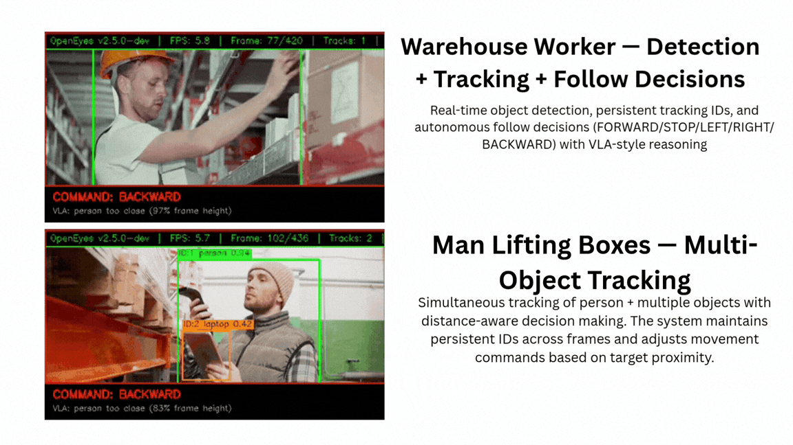
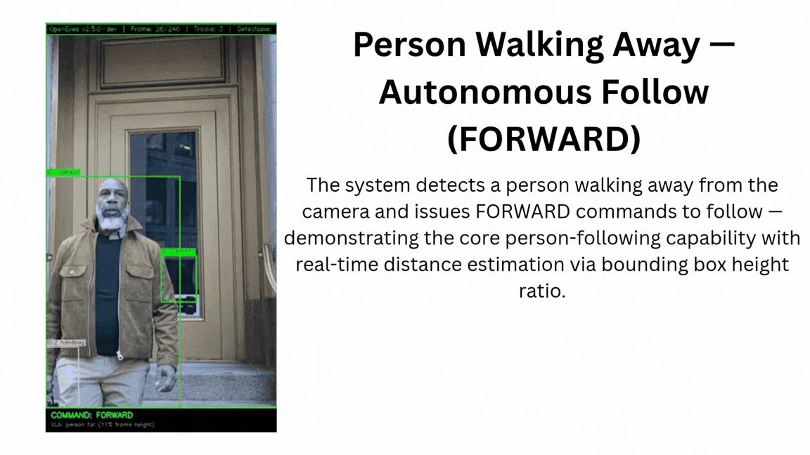

Demos & Use Cases
Experience the computational power of OpenEyes across different hardware platforms. From edge-native world models to real-time ROS2 multi-topic nodes, run these commands to instantly deploy advanced vision capabilities.
Framework Configurations
Drop these exact commands into your terminal to spin up specific OpenEyes architectures.
Core Vision Pipeline

Spins up the DeepStream appsink pipeline with YOLO inference, FaceMesh (max 3 faces), and 33-point body pose estimation via MediaPipe at an aggregated 40-60 FPS on edge GPUs.
Autonomous Person Following

Injects the LeWorldModel spatial tracker. Evaluates bounding box height ratios dynamically to issue forward/stop/backward motor commands.
ROS2 Distributed Publisher
Launches the VisionPublisher node with a MultiThreadedExecutor. Broadcasts 10 JSON payload topics simultaneously (detections, depth, poses, plans) across your ROS network.
Headless REST API
Bypasses all GUI rendering. Boots a high-performance FastAPI server exposing the vision engine's state and detection arrays over standard HTTP.
Batch Video Processing
Feeds an offline MP4 stream into the vision engine. Overlays hardware-accelerated detection boxes and compiles the result into a new hardware-encoded output stream.